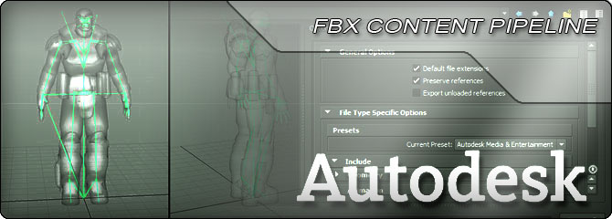

UDN
Search public documentation:
FBXPipeline
日本語訳
中国翻译
한국어
Interested in the Unreal Engine?
Visit the Unreal Technology site.
Looking for jobs and company info?
Check out the Epic games site.
Questions about support via UDN?
Contact the UDN Staff
中国翻译
한국어
Interested in the Unreal Engine?
Visit the Unreal Technology site.
Looking for jobs and company info?
Check out the Epic games site.
Questions about support via UDN?
Contact the UDN Staff
UE3 Home > FBX Content Pipeline
FBX Content Pipeline

The FBX Content Pipeline has replaced the ActorX plugins and import pipeline.
FBX is a file format owned and developed by Autodesk. It is used to provide interoperability between digital content creation applications such as Autodesk MotionBuilder, Autodesk Maya and Autodesk 3ds Max. Autodesk MotionBuilder software supports FBX natively, while Autodesk Maya and Autodesk 3ds Max software include FBX plug-ins.
Unreal Engine 3 features an FBX import pipeline which allows simple transfer of content from any number of digital content creation applications that support the format.
The advantages of the Unreal FBX Importer over other importing methods are:
- Static mesh, skeletal mesh, animation, and morph targets in a single file format.
- Multiple assets/content can be contained in a single file.
- Import of multiple LODs and Morphs/Blendshapes in one import operation.
- Materials and textures imported with and applied to meshes.
- FBX Static Mesh Pipeline - Transferring static mesh assets from 3D applications to UnrealEd.
- FBX Skeletal Mesh Pipeline - Transferring skeletal mesh assets from 3D applications to UnrealEd.
- FBX Animation Pipeline - Transferring skeletal animations from 3D applications to UnrealEd.
- FBX Morph Target Pipeline - Transferring morph targets from 3D applications to Unreal Editor.
- FBX Material Pipeline - Transferring materials and textures from 3D applications to UnrealEd.
- Viewing FBX with QuickTime - How to setup QuickTime to view FBX files.
- FBX Best Practices - Best practices when using FBX.
FBX Import Dialog
- Import Type - Automatically derived from the selected file header. If the file contains Deformers, Import Type is set to Skeletal Mesh, otherwise it is set to Static Mesh. When import type is Skeletal Mesh, static meshes in FBX file are not be imported.
- If the original type is Static Mesh, but the user changes this to Skeletal Mesh, nothing will be imported since no skeleton with deformations is found.
- If the original type is Skeletal Mesh, but the user changes this to Static Mesh, the meshes are imported as static meshes.
- Override Full Name - If TRUE and the FBX file only contains one mesh, the name specified in the Name field will be used as the full name for the imported mesh. Otherwise, the Naming Rules will be used.
- Import Mesh LODs - If TRUE, creates LOD models for Unreal meshes from LODs defined in the file. Otherwise, only the base mesh from the LOD group is imported. For skeletal meshes, the LOD models can be skinned to the same skeleton, or a different skeleton. If the LOD model is skinned to a different skeleton, it must meet the Unreal LOD requirements, with the exception that the name of the root bones can be different since the FBX importer renames the root bones automatically.
- Override Tangents - If TRUE, the normals and tangents data of the mesh(es) will be overridden.
- Import Morph Targets - If TRUE, creates Unreal morph objects for skeletal meshes. Both Maya Blendshapes and 3ds Max Morph modifiers are supported.
- Import Animations - If TRUE, creates a new AnimSet based on all animations available in the FBX file for the selected skeletal mesh.
- Import Rigid Animation - If TRUE, unskinned, hierarchy-based animation is imported from the FBX file.
- Resample Animations - If TRUE and
Import Animationsis TRUE, all animation curves being imported are resampled to 30 FPS. - Advanced
- Use T0As Ref Pose - If TRUE, the first frame (frame 0) of the animation track will be used to replace the skeletal mesh's reference pose.
- Split Non Matching Triangle - If TRUE, triangles with non-matching smoothing groups will be physically split, duplicating shared vertices.
- Combine Meshes - If TRUE, all static meshes contained in the FBX scene are combined into a single static mesh.
- Advanced
- Explicit Normals - If TRUE, the normals for the mesh will be read from the FBX file instead of calculating them.
- Remove Degenereates - If TRUE, any degenrate triangles within the mesh will be removed. This option should generally be left enabled.
- Import Materials - If TRUE, materials are created in Unreal for each of the materials found in the FBX file.
- Import Textures - If TRUE, Textures referenced in the FBX file are imported into Unreal. If
Import materialsis TRUE, textures are always imported regardless of this setting. - Invert Normal Maps - If TRUE and textures are being imported, normal maps values will be inverted.
- Create Groups Automatically - If TRUE, any generated materials or imported textures will be placed into 'Materials' or 'Textures' groups in the specified package automatically.
FBX Scene Info dialog window
Stats
The Stats section displays overall statistics about the contents of the FBX file.- Static Meshes - Displays the number of static meshelements contained within the file.
- Skeletal Meshes - Displays the number of skeletal mesh elements contained within the file.
- Total Geometric Objects - Displays the number of total geometric elements (static mesh and skeletal mesh) contained within the file.
Meshes
The Meshes section displays a list of the geometric objects contained within the file along with various statistics about each mesh. General
These items are displayed for both static meshes and skeletal meshes.
General
These items are displayed for both static meshes and skeletal meshes.
- Mesh Type - Displays the type of the mesh, Static Mesh or Skeletal Mesh.
- Faces - Displays the number of polys the mesh contains.
- Vertices - Displays the number of vertices the mesh is made up of.
- Triangulated - Displays whether the mesh was triangulated on export.
- Skeletal Root - Displays the name of the root bone for the skeleton.
- Skeletal Elements - Displays the number of bones contained in the skeleton.
- Morph Count - Displays the number of morph targets the mesh contains.
Animation
The Animation section displays information about the animations contained within the file.- Take Name - Displays the name of the animation track.
- Frame Rate - Displays the frame rate (frames per second) for the animation.
- Total Time - Displays the duration (seconds) of the animation.
Naming Rules
| FBX | ActorX / ASE | |
|---|---|---|
| Static Mesh | • If %1 is: • Not empty - If Combine As Single is: • Enabled - Named as %1. • Disabled - Named as %1_%2. • Empty - Named as %2. | • If %1 is: • Not empty - Named as %1. • Empty - Named as StaticMesh_xx. |
| Skeletal Mesh | • If %1 is: • Not empty - Named as %1_%2. • Empty - Named as %2. | • If %1 is: • Not empty - Named as %1. • Empty - Named as SkeletalMesh_xx. |
| Animset | • Named from skeleton root when imported with skeletal mesh. • Named by user when selecting AnimSet Editor → File → New AnimSet... | • Named by user when selecting Animset Editor → File → New Animset... |
| Animation Sequence | • Named as the file name if there is one Sequence in FBX file. • Named as %1_%2 if there are multiple sequence in FBX file. | • Named in the PSA that was set when exported from ActorX. |
| MorphTarget Set | • %1_%2_MorphTargetSet when importing with skeletal mesh. • Named by user when selecting Animset Editor → File → New MorphTargetSet... | • Named by user when selecting Animset Editor → File → New MorphTargetSet... |
- %1 – The string in Name field of import dialog.
- %2 – The mesh node name in the FBX file. For skeletal mesh, if it is composed of multiple FBX meshes, the first FBX mesh name is used as the part of FBX node name.